I am a Postdoctoral Researcher at Princeton University in the Princeton RL Lab working with Professor Benjamin Eysenbach. I received my PhD from the University of Texas at Austin, delightfully co-advised by Professor Scott Niekum in the Personal Autonomous Robotics Lab (PeARL) and Professor Amy Zhang in the Machine Intelligence and Decisionmaking Lab, while also working with Professor Yuke Zhu and the Robotic Perception and Learning Lab. My research focuses on developing unsupervised hierarchical and factorized methods for robotic manipulation and sequential decision-making, with interests in reinforcement learning, causal reasoning, skill discovery, and representation learning. I am broadly interested in how robots can better complement and collaborate with humans through factorized representations of the world. I am currently investigating the question: How can we enable agents with directed exploration so that they can meaningfully understand, explain, and improve both their and our decision-making?
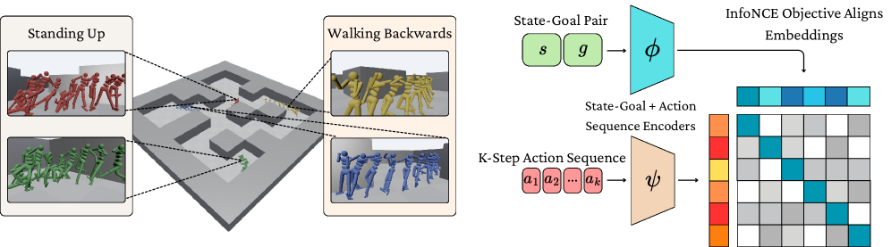
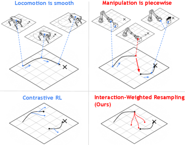
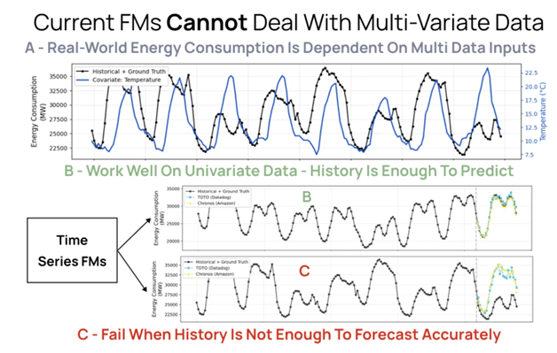
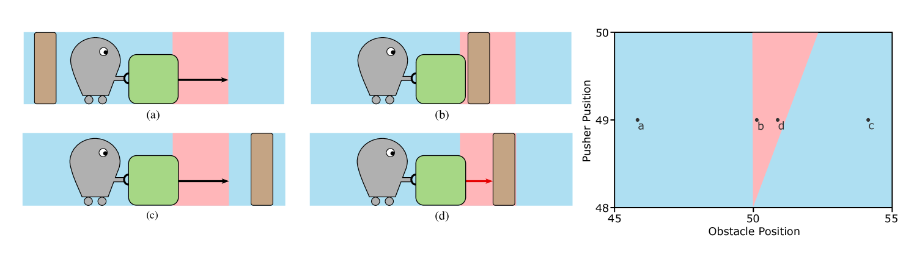
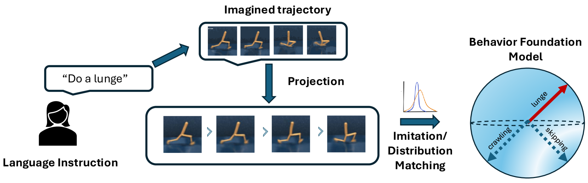
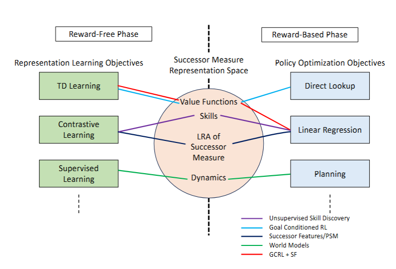
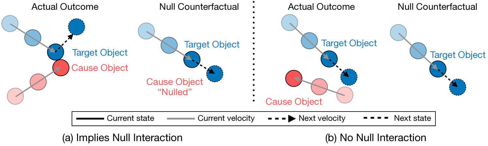
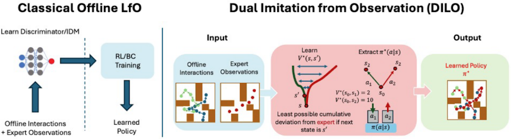
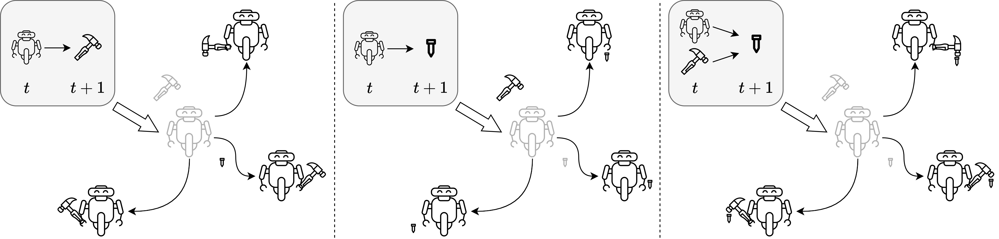
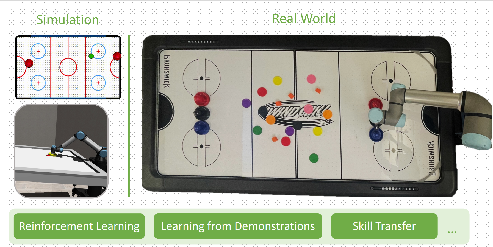
Agile Robotics: From Perception to Dynamic Action, A Future Roadmap for Sensorimotor Skill Learning for Robot Manipulation Workshops @ ICRA 2024,
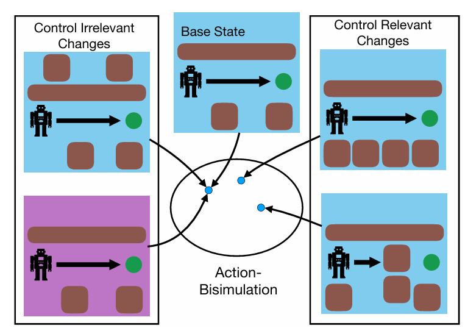
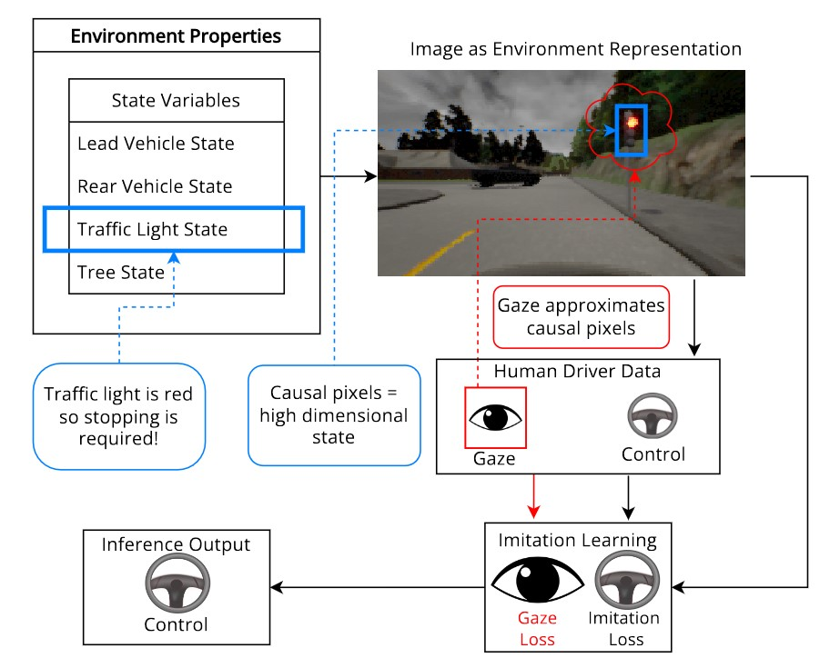
AAMAS 2024 · NVIDIA Best Paper, CoRL ARRH Workshop 2022
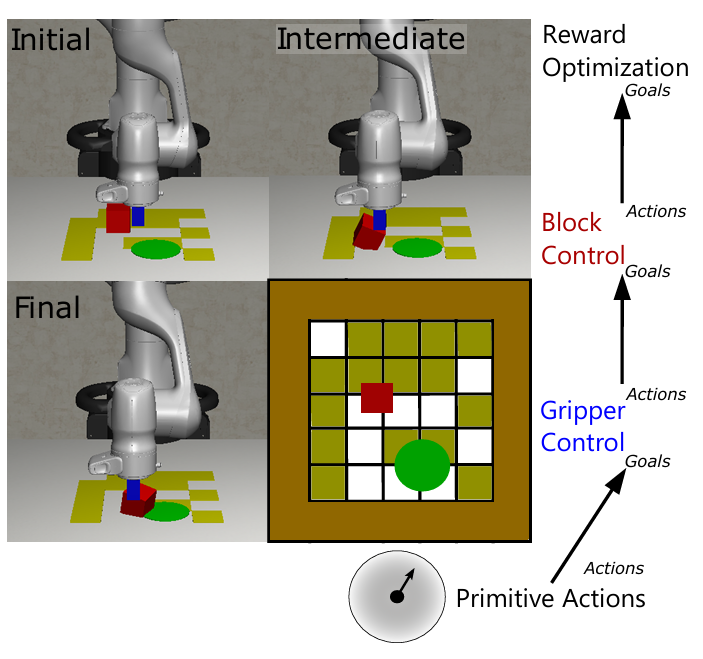
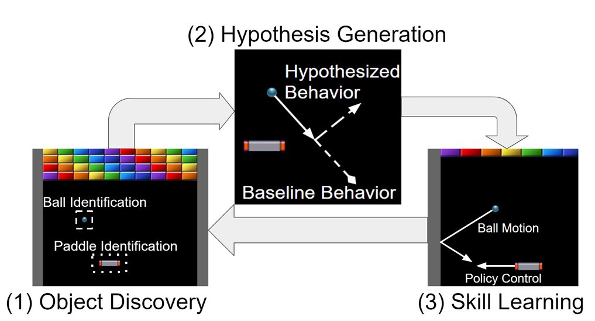
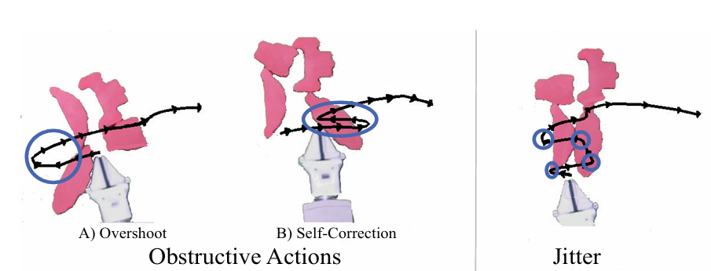
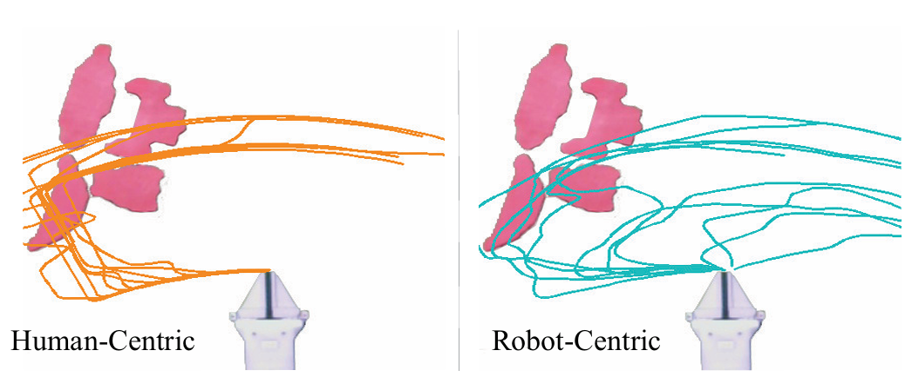
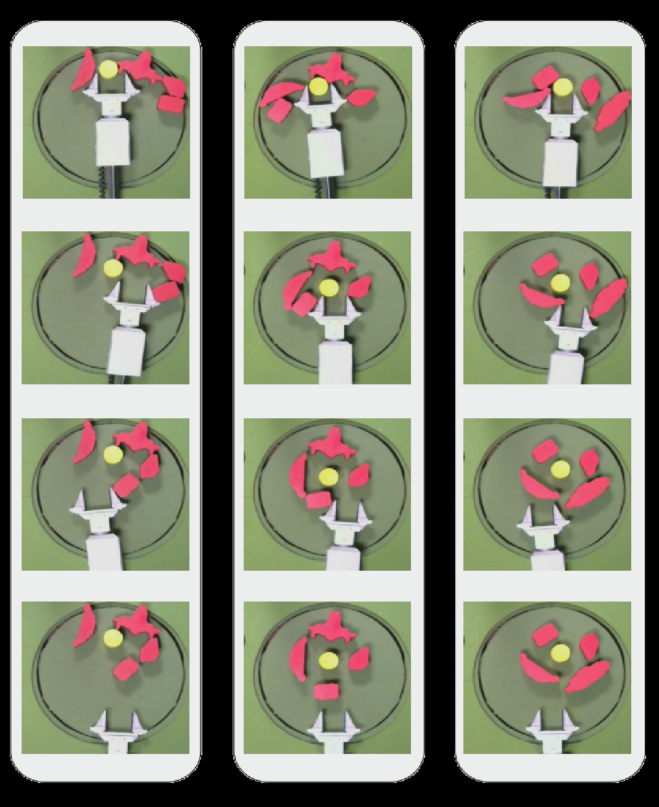